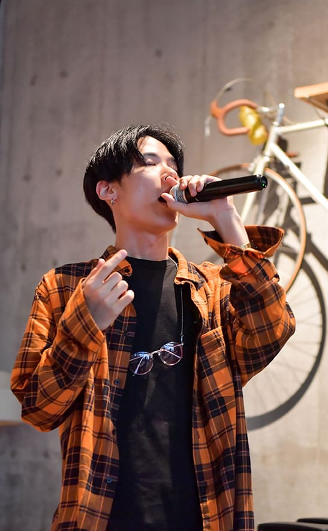

BIOGRAPHY

Oct.
2012年の衝撃のデビュー以降、数々の名曲を生み出し続けてきた彼を、国内のHiphopリスナーで知らない者はいない。
ソロ活動でコンスタントにアルバム、ミックステープのリリースを続け、SKY-HIとのコラボレーションアルバムや、清水翔太の楽曲に参加する等、様々なフィールドで活躍を続け、その勢いはとどまるどころか、年々勢いを増しシーンの最前線で、進化を続けている。
2017年にリリースした4枚目のアルバム“INDIGO”からのシングル”Life Style feat.漢,D.O” に加え、たった一曲で不動の地位を獲得したJP THE WAVY”Cho Wavy De Gomenne”のRemixへの参加等、 2017年は彼の年であったと言っても過言ではない。
た、彼が生み出すリリック、ワードセンスは多くのリスナーを魅了し続け、香取慎吾、尾崎裕哉、若旦那、また韓国のスターiKON等、ジャンルの壁を越えたアーティストに支持され、作詞の依頼も絶えない。
2018年7月には、KOMA DOGG(LDH MUSIC)への電撃移籍を発表し、更なる注目を浴びているOct.だが、アジア圏を含む、国内外でのパフォーマンスの依頼が絶えない理由は、彼のパフォーマンスを一度観たら、どんなリスナーも彼の世界観に魅了されてしまうからだろう。